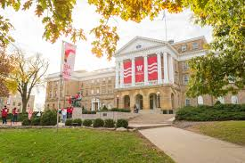

Welcome to my Website!
This is a demo website for LIS 351 where you can learn all about who I am.
Get StartedThis is a demo website for LIS 351 where you can learn all about who I am.
Get Started
My name is Kevin Gao and I am a student in LIS 351. I am currently 20 years old attending college at UW-Madison.

I am currently a student at the University of Wisconsin-Madison, majoring in Information Science. I am very interested in learning how humans percieve information and how it circulates through different networks and the internet.

Some hobbies of mine include playing video games, cooking, spending time with friends, speding time with my family, and just having a good time. I like to spread positive vibes around me because I believe that will make others happy aswell.
I love taking pictures of nature and the outdoors because of how beautiful and peaceful it is.

I chose UW-Madison because of its strong academic programs, particularly in Information Science, and the vibrant campus community that supports student growth and development.
I've learned a lot about web development through different assignments that I've done and how to write a code using HTML and very excited to use CSS later on. I've also gained an understanding of how to create responsive websites and how to use different tools and frameworks to build better user experiences.

Explore more here
Explore More